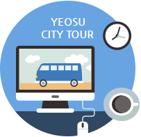

체험
낭만 버스 예약
-

낭만버스 예약하기
안내사항
1. 해양수산과학관은 매주 월요일에 휴관으로 인하여 코스에서 제외됩니다. 예약안내 : (유)동서관광 061-692-0900
2. 여수 낭만 버스의 원활한 운영을 위해 이용객 여러분께서는 사전 예약을 하여 주시기 바랍니다.
3. 이용객은 반드시 개별적으로 여행자보험에 가입해야 합니다. 여행자보험 미가입으로 인한 피해의 모든 책임은 이용객 본인에게 있습니다.
4. 1코스는 매월 둘째주 월요일 휴무입니다.
5. 2층 버스는 휠체어 탑승 가능합니다.
6. 청각장애인을 위한 수화통역사를 배치하고 있습니다. 버스 예약 후 연락 부탁드립니다. (☎061-659-3872)
후기
후기
-
여수낭만버스 야간코스 이용한 리얼후기!
여행을 준비하면서 여수낭만버스가 있다는 사실을 알게되었어요. 찾아보니 1코스, 2코스, 토요유적코스, 코스 등 여러 타입이 있어서 하나하나 보다가 저희는 2층버스...
-
여수 낭만버스 2코스, 토요유적코스 변경 안내!
여수 낭만버스 탑승후기 이벤트 지금 여수관광에서는 여수 낭만버스 탑승 후기 이벤트를 진행하고 있는데요~ 2019년 3월부터 12월까지 낭만버스를 탑승 한 후 후기를...
-
여수여행 여수낭만버스 처음부터 끝까지 다 좋아♪
이번에 1박2일로 짧게 여수여행을 다녀왔는데 그 중 제일 재미있게 즐겼던 여수낭만버스 시간을 달리는 버스커 생생후기를 남기려고해요! 제 기준에선 이번 여행의...
-
여수 낭만포차와 낭만버스 시간을 달리는버스커 탑승후기
#조선 후기 영국 남자로 태어난 그는 꿈속에서 본 동백꽃과 살결이 흰 여인을 찾아, 거친 바다를 헤치며 거문도까지 찾아온다. #현대_여수낭만버스 시간을 달리는...